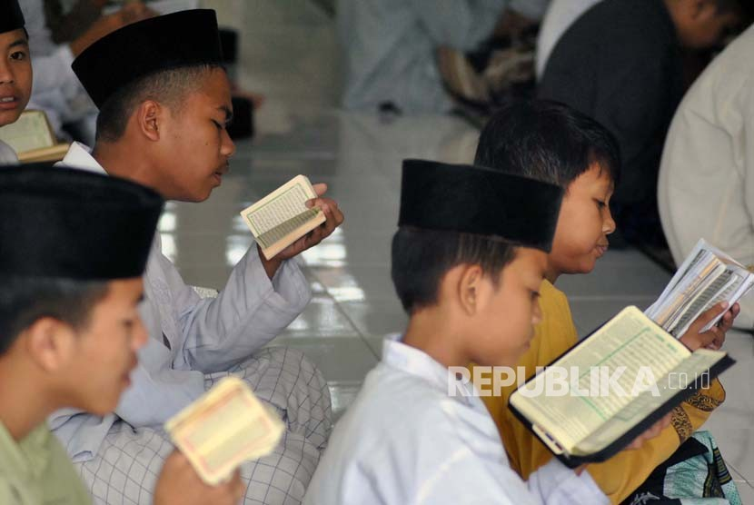

PONDOK PESANTREN AL KARIM
"Menjadi pondok pesantren yang unggul dalam membentuk generasi muslim yang berakhlak mulia, berilmu luas, mandiri, serta mampu menghadapi tantangan zaman dengan berpegang teguh pada nilai-nilai Islam."
PROGRAM UNGGULAN
Pondok Pesantren Al Karim adalah Pusat Pendidikan Islam yang Memadukan dua Program Unggulan yaitu Tahfidz Qur'an dan Kajian Kitab Kuning. Melalui Program Tahfidz Qur'an Santri Dibimbing dengan Metode yang Terstruktur dan Fokus pada Tajwid Serta Pemahaman Makna. Sementara, Kajian Kitab Kuning Bertujuqn Memperdalam Pemahaman Santri Terhadap Berbagai Disiplin Ilmu Islam, Seperti Fiqih, Hadis, Aqidah dan Tasawuf, Melalui Kajian kitab-kitab klasik yang Telah Menjadi Rujukan Ulama Sepanjang Masa.
TAHFIDZUL QUR'AN
Program Tahfidz Qur'an di Pondok Pesantren Al Karim Merupakan Program Unggulan yang dirancang Untuk Melahirkan generasi Qur'ani yang memiliki hafalan kuat dan pemahaman mendalam terhadap Al-Qur'an. Para Santri dibimbing Secara Intensif Oleh Ustadz dan Ustadzah Berpengalaman yang Berfokus Pada Pembinaan Generasi Penghafal Al-Quran dengan Metode Hafalan yang efektif dan berkesinambungan. program ini menekankan Pemahaman Tajwid dan Tafsir Program ini Tidak Hanya Fokus pada Menghafal, Tetapi juga Menanamkan Nilai-Nilai Luhur Al-Qur'an dalam Kehidupan Sehari-hari.
PROGRAM KITAB KUNING

Program Kajian Kitab Kuning di Pondok Pesantren Al Karim Bertujuan untuk Membekali Para Santri dengan Pemahaman Mendalam tentang Ilmu Agama Islam Melalui Kajian Kitab-Kitab Klasik yang Menjadi Warisan Ulama Salaf. Dalam Program ini Para Santri Memepelajari Berbagai Disiplin Ilmu, Seperti Fiqih, Tafsir, Akidah, Hadits, dan Tasawuf, Menggunkan Kitab-Kitab yang Telah Menjadi Rujukan utama Ulama. dengan Bimbingan Para Ustadz dan Ustadzah yang Berpengalaman, Santri Diajak Memahami Nilai-Nilai Islam Secara Mendalam, Sehingga Mampu Mengaplikasikannya Di kehidupan Sehari-hari
CONTACT
Alamat : Jalan melati, Dusun Bunga, Desa proto , Kecamatan Kedungwuni, Kabupaten Pekalongan, kode pos [51178]
Telepon/WhatsApp : (+62 8157668800) Email : info@alkarim.com
Jam Operasional :
Senin - Sabtu: 08.00 - 16.00 WIB
Minggu: Tutup
Media Sosial
Instagram: @alkarim_pesantren
Facebook: Pondok Pesantren Al Karim
Twitter: @AlKarimPesantren
YouTube: Pondok Pesantren Al Karim